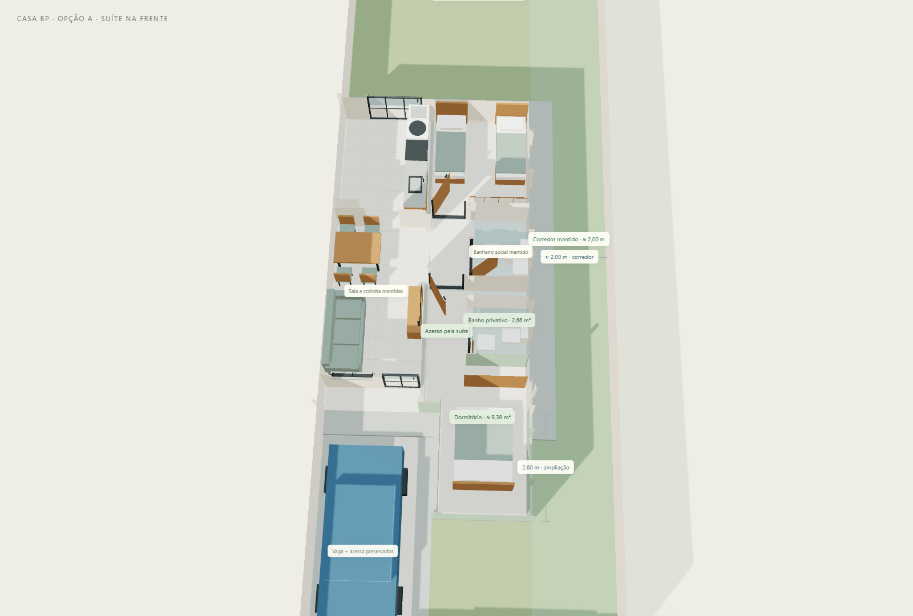
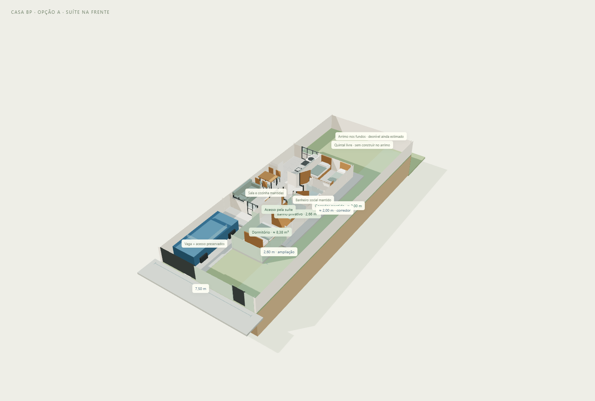
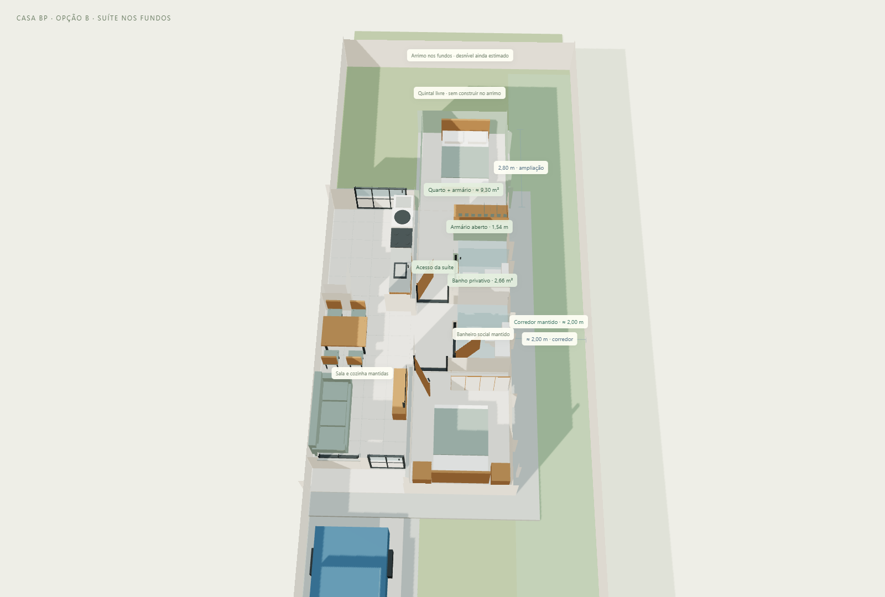
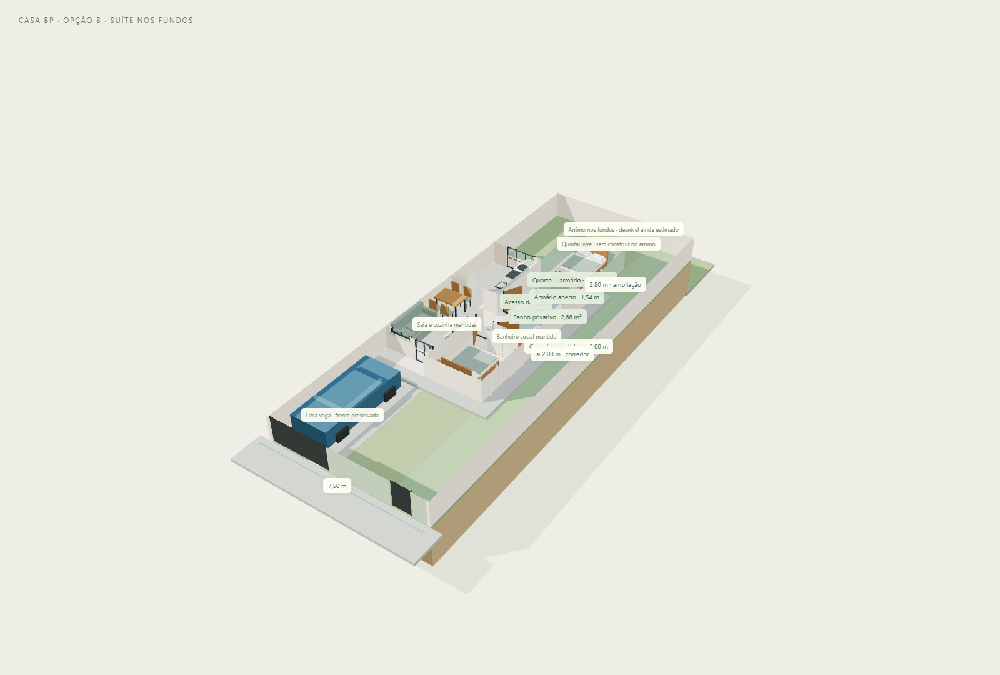
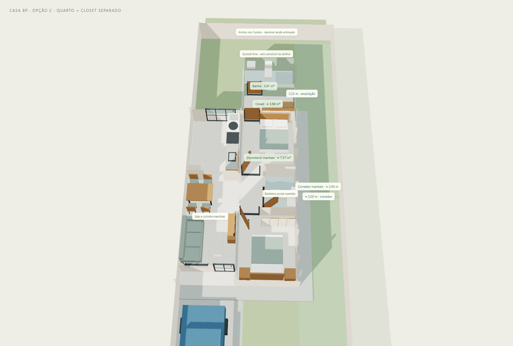
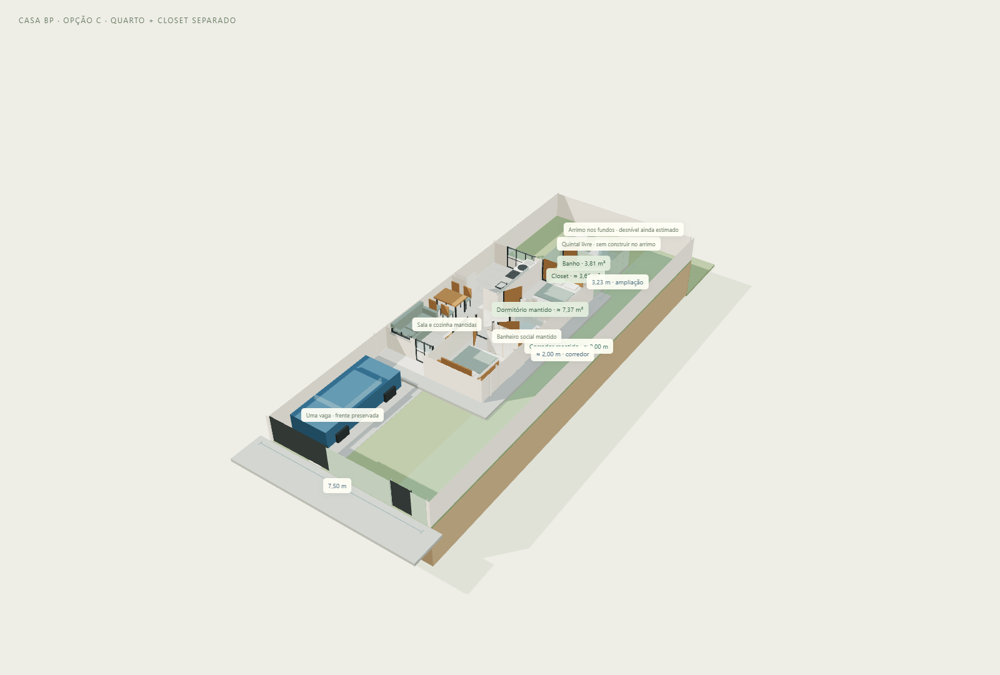
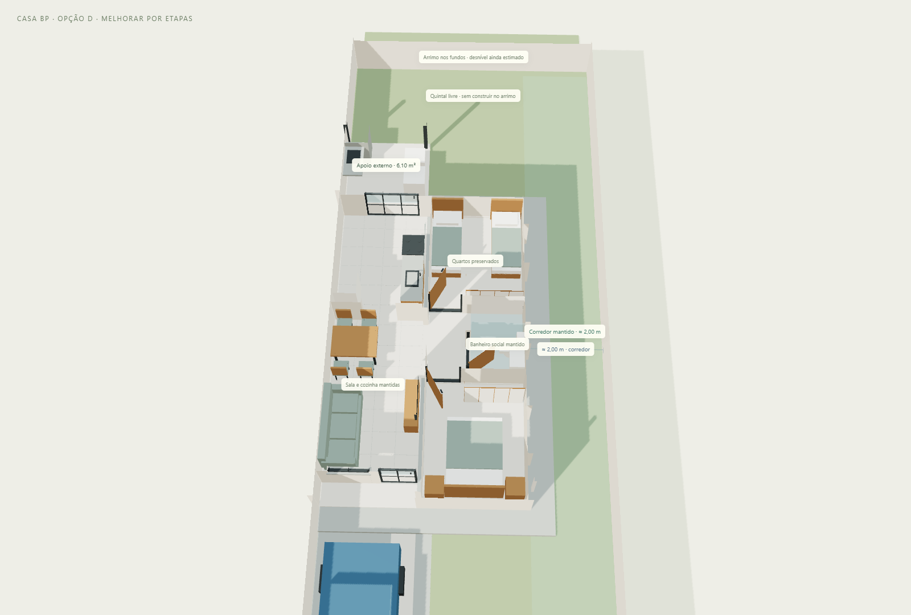
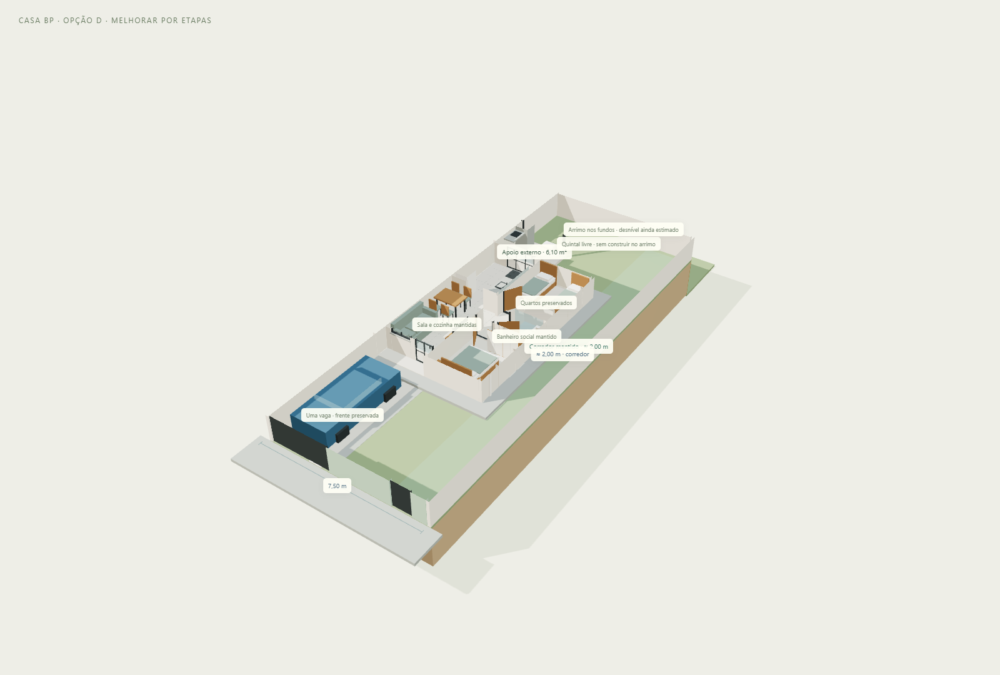

Estudos para lote de 7,50 × 20,00 m, mantendo uma vaga, acesso lateral e área de churrasqueira/lavanderia nos fundos. A casa atual permanece preservada em seu próprio visualizador e no pacote v02. Os estudos são alternativas para comparar, não etapas para executar todas juntas.
| Alternativa | Área nova | Banho / closet | Folga posterior* | Intervenção e custo relativo |
|---|---|---|---|---|
| A — Suíte na frente | 6,29 m² fechados | 2,66 m² de banho Armário linear | 5,35 m | Intermediário; fachada, vão e adequações podem pesar |
| B — Suíte nos fundos | 7,90 m² fechados | 2,66 m² de banho Armário linear | 2,55 m | Intermediário; abrir o fundo do quarto pode alterar o orçamento |
| C — Quarto + closet separado | 9,11 m² fechados | 3,81 m² de banho 3,68 m² de closet separado | 2,12 m | Intermediário a maior; mais área e tubulação mais longa |
| D — Melhorar por etapas | 0,00 m² fechados + 6,10 m² de cobertura leve | Sem banho novo Quartos mantidos | 2,95 m | Menor investimento inicial entre os estudos; sem banheiro novo |
*Distância geométrica atrás da suíte ou da cobertura de D até a face interna do muro dos fundos (Z=13,86 m). Em A–C, o apoio externo opcional ocupa apenas a faixa esquerda. Essas medidas não indicam conformidade com recuos legais.
Comparação qualitativa inferida do escopo; não é orçamento, cotação ou garantia de ordem de preço. Sem preços em reais. Estrutura, solo, arrimo, acabamentos e mão de obra podem mudar a ordem.
Quarto da frente + banho colado: funciona como estudo espacial, desde que o avanço seja permitido. O banho usa 1,40 × 1,90 m dentro da faixa posterior do quarto atual; a frente avança 2,60 m para recompor o dormitório. O volume novo tem 2,14 m de largura livre, para preservar o acesso junto à vaga. A área de dormitório fica em aproximadamente 8,38 m², incluindo o roupeiro: o ganho sobre os 8,00 m² originais é pequeno, pois parte do quarto atual vira banheiro e acesso. A hidráulica fica próxima do banho social, mas não se pode simplesmente derrubar a parede da fachada. O recuo frontal adotado no modelo cairia de aproximadamente 6,00 para 3,40 m: isso ainda não foi validado para o seu lote.
Quarto dos fundos + closet e banho: há duas interpretações. Em B, o banho fica perto do existente e o quarto avança 2,80 m; o “closet” é um armário aberto de 1,54 m, sem ambiente separado. Em C, o quarto mantém aproximadamente 7,37 m² e recebe, atrás dele, um closet de passagem de 2,54 × 1,45 m e um banho de 2,54 × 1,50 m. O conjunto cresce, mas a área de cama permanece igual. O avanço total de C é 3,23 m.
Primeiro, conferir medidas reais, estrutura e recuos, e definir a solução do arrimo já em execução. Depois escolher a suíte e os acessos. Se o orçamento inicial for menor, executar apenas D com apoios previstos no projeto, mantendo o espaço reservado à alternativa escolhida. Bancadas, armários e acabamentos podem vir depois. A nova construção não deve ser presumida apoiada no muro, no radier existente ou no arrimo; as ligações, fundações e instalações precisam ser definidas.
Os dois banheiros de A e B têm janelas laterais independentes para o corredor; o novo de C também. Suíte interna significa acesso privativo pelo quarto, não banheiro sem ventilação. Todas as dimensões propostas são estudos, sujeitos à verificação de habitabilidade, estrutura e legislação.
Em A e B, proximidade de banheiros reduz a distância geométrica potencial de redes, mas não comprova reaproveitamento de tubos: conferir cotas de esgoto, diâmetros, ventilação, caixas e abastecimento. Em C, a rota mais longa deve ser estudada sem criar obstáculos no corredor.
A Prefeitura de Itapetininga inclui ampliação no procedimento de licenciamento assistido por profissional habilitado. Zoneamento do lote, recuos, áreas de iluminação/ventilação e eventuais regras do empreendimento ainda precisam ser verificados. A alternativa A é condicional, e nenhuma opção representa aprovação municipal. Procedimento municipal; referências de planejamento da Prefeitura.
Sua primeira ideia · banheiro encostado no atual
O que muda: Abrir a parede frontal do dormitório, avançar 2,60 m com volume mais estreito para manter acesso junto à vaga, reorganizar sua janela lateral e construir divisórias para o banho interno. Preservar banheiro social, sala e cozinha.
Ganho: Deixa o quintal dos fundos mais livre e aproxima os banheiros.
Atenção: Só avançar após conferir o recuo aplicável ao lote. A extensão foi estreitada para preservar vaga e passagem: a parte nova do quarto tem só 2,14 m de largura livre. O ganho de área de dormir é pequeno. O vão da fachada depende de verificação estrutural.
Como eu usaria esta opção: Alternativa condicional e menos favorável no conjunto: além do recuo, estreita a área de cama e oferece pouco ganho líquido de dormitório.


Banhos próximos + armário aberto compacto
O que muda: Reorganizar o dormitório 2: banho privativo na parte próxima ao banho atual; dormitório ampliado para trás. Abrir conexão ampla na parede posterior e reorganizar a janela lateral desse quarto.
Ganho: Mantém a frente para a vaga; reúne os dois banheiros e mantém sala/cozinha no lugar.
Atenção: O ganho de área acomoda o banheiro, circulação e armário; o closet é compacto e aberto. Verificar a abertura estrutural e as fundações antes de escolher.
Como eu usaria esta opção: Primeira opção para estudar se a prioridade for suíte compacta e hidráulica concentrada.


Sua segunda ideia · sequência quarto → closet → banho
O que muda: Manter o tamanho e a janela do dormitório 2; abrir um acesso de 0,80 m nos fundos. Anexar closet e banheiro novos atrás do quarto, mantendo banheiro social, sala e cozinha.
Ganho: Closet separado de verdade, banheiro maior e abertura pontual, em vez de remover toda a parede de fundo do quarto.
Atenção: O dormitório de dormir mantém cerca de 7,37 m²: cresce o conjunto da suíte, não a área de cama. Ocupa mais quintal e afasta o banho novo da hidráulica atual. Aproxima a obra da faixa do arrimo, a avaliar tecnicamente.
Como eu usaria esta opção: Priorizar se o closet separado importar mais que o menor investimento inicial.


Menor intervenção inicial · serviço e lazer nos fundos
O que muda: Usar a porta existente da cozinha para acessar uma cobertura de 2,54 × 2,40 m com bancada, churrasqueira e apoio de lavanderia. Preservar as paredes e janelas da casa.
Ganho: Entrega uso imediato do quintal com poucas interferências na casa. Mantém os dormitórios e permite adiar a escolha da suíte.
Atenção: Não entrega suíte nem closet nesta etapa. Cobertura, apoios e pontos de água/esgoto precisam de projeto; não apoiar a nova cobertura no muro ou no arrimo sem avaliação.
Como eu usaria esta opção: Primeiro passo se gastar menos agora for a prioridade. Não executar tudo junto por impulso.


Abrir painel com duas abas · Abrir só as melhorias · Casa atual preservada
Os modelos GLB estão em metros, com eixo Y vertical. As áreas novas são calculadas pela projeção externa dos módulos, sem confundir m² de quarto, banho e cobertura. Acabamentos, móveis, seções de apoios e inclinações são ilustrativos. O desnível de 2 m do arrimo continua sendo estimativa do proprietário. Os modelos de A–C são exportados sem apoio de serviço; D inclui esse apoio. O botão no visualizador permite exportar a combinação que estiver escolhida. Todas as camadas da construção são exportadas, e os volumes vermelhos de avaliação são excluídos do GLB.